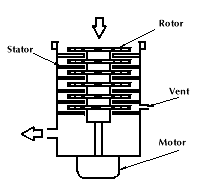
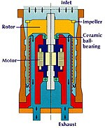

Turbomolecular Pumps and Drag Pumps: Technical Notes
This Page From: Lesker Vacuum Systems |
Turbomolecular Pumps Resembling a jet engine, a turbo pump has a stack of rotors, each with multiple, angled blades which drive at very high tangential speed. Gas molecules, hit by the underside of the angled blades, move with momentum in the direction of the higher pressure exhaust. Turbo pumps come in two basic designs. In the SNECMA design (named after a French jet-engine manufacturer) all gas enters through the main flange at the visible single-end of the pump; the Pfeiffer (named after the original turbo pump's manufacturer) double-ended design, has two rotors set-mounted on a common axle. Gas enters the pump through a right angle port between the two rotor sets and exits into an exhaust manifold connecting the two ends of the pump. For normal commercially-available pumps, pumping speeds range from approximately 20 L/s to 3,000 L/s (although some turbo pumps manufactured in Russia are quoted with pumping speeds of 20,000 L/s). All gases are pumped at roughly the same rate. One pump, for example, listed with 450 L/s for nitrogen, has a pumping speed for hydrogen of 310 L/s. When selecting a turbomolecular pump, consider not only the rate of pumping, but also compression ratio (CR). Let's look at an example:
Turbo pumps reach full operating speed within a few minutes of switch-on, making a separate roughing line unnecessary since the accelerating turbo can rough the chamber. The trick is to match chamber volume and the effective pumping speed, and to time the turbo pump's start so its rotational speed is high enough to prevent backstreaming when the chamber reaches 10-1 Torr (that is, when an oil-sealed mechanical pump's relative backstreaming rate starts its rapid rise). With proper venting, a turbo pump can be entirely halted in under one minute. This slight delay before the chamber reaches atmospheric pressure and can be opened usually works for most applications. The benefit is clear. If the pump does not run while venting the chamber, we have no need for a high vacuum valve between pump and chamber. Further, in a correctly designed and operated system, the turbo pump does not allow oil vapor to backstream so that the system does not require an LN2 trap between chamber and pump. A turbo pump's high rotational speeds (some small diameter units operate at 60,000 rpm) put serious strain on the shaft bearings. Most manufacturers now offer light-weight ceramic ball bearings with grease lubrication since this combination is both light, lowering the momentum of the bearing, and has a low bearing-lubricant vapor pressure at the pump's working temperature. More recently, manufacturers have begun offering magnetically levitated bearings which are either permanent magnets for the small sized pumps or a combination of permanent and dynamic magnetic fields, supporting the shaft without contact. Magnetically levitated pumps (such as those manufactured by Shimadzu) include non-contact bearings, resulting in a turbo pump that has true zero oil-vapor backstreaming with bearings that never wear down. ApplicationsTurbomolecular pumps are used in a wide variety of high vacuum applications -- any that demand clean, truly oil-free vacuum between 10-4 and 10-10 Torr. The single-ended pump is frequently chosen to replace a comparably sized diffusion pump in existing systems. Versions made from materials that withstand chemical attack when pumping corrosive gases find extensive application in semiconductor processing, particularly those using reactive gas plasmas. For truly oil-free systems, choose magnetically levitated turbo pumps. They can work with an oil-free piston pump or in some circumstances, with a diaphragm pump. The initial cost of a turbo pump is higher than a diffusion pump with similar pumping speed. But the lack of need for external components (see Technical Notes ), the turbo pump's lower running costs, and the almost negligible chance that clumsy operation will cause an expensive vacuum disaster, make the turbo pump the first choice for many users. (We do not recommend turbo pumps for systems generating dust or particulate matter, nor where the induced micro-vibrations might upset precise positioning, e.g. electron microscopes, micro-surface analysis, atomic force and scanning tunneling microscopes.) Turbo pumps find applications in processes involving:
|
Drag Pumps
The compression ratios for drag pumps typically measure: 109 for N2, 104 for He, 103 for H2. Use drag pumps in applications requiring clean, low pumping speeds (less than 10 L/s) and modest ultimate pressures (10-6 Torr). The drag pump accepts continuous inlet pressures below 0.1 Torr and discharges with a foreline pressure of 10 to 40 Torr. The latter pressure indicates that diaphragm pumps, not normally suitable for backing high vacuum pumps, could work in some applications with drag pumps. The grease lubricated, ceramic ball bearings used to suspend the rotor have a light weight with a low coefficient of friction. Low forces on the bearing cage and low bearing temperatures, give these pumps high reliability with field maintenance intervals of over one year. These bearings have two major benefits over oil lubricated designs: they allow for easy user replacement; and they allow the pump to be mounted in any orientation. |